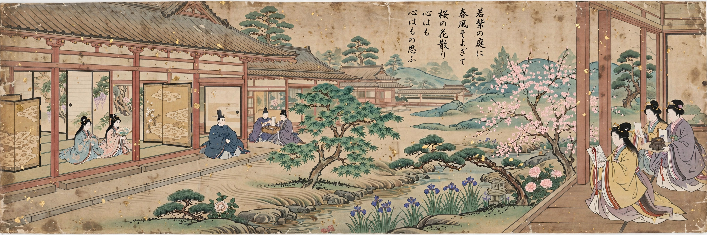

| Heian period | |
|---|---|
| Period | 794 – 1185 AD |
| Capital | Heian-kyō (modern Kyoto) |
| Preceded by | Nara period |
| Followed by | Kamakura period |
The Heian period is the last division of classical Japanese history, running from 794 to 1185. It is named after the capital city of Heian-kyō, present-day Kyoto, established by Emperor Kanmu. The period is celebrated for the flowering of Japanese imperial court culture, art, poetry and literature, and for the rise of the samurai class that would eventually supplant court rule.

Imperial power was increasingly exercised through regents of the Fujiwara clan, who married their daughters into the imperial family and governed as sesshō and kampaku, notably under Fujiwara no Michinaga around the year 1000. Central control over the provinces weakened as tax-exempt private estates (shōen) grew, and provincial warriors organised into samurai bands.
Heian court culture produced Murasaki Shikibu's The Tale of Genji, often called the world's first novel, Sei Shōnagon's The Pillow Book, the Kokinshū poetry anthology, and the development of kana syllabaries that enabled vernacular Japanese writing, especially by court women. Tendai and Shingon Buddhism flourished, and Pure Land devotion spread later in the period.
Power struggles including the Hōgen and Heiji rebellions, the rise of the Taira under Taira no Kiyomori, and the Genpei War (1180–1185) ended Heian rule. Minamoto no Yoritomo's victory led to the Kamakura shogunate, beginning medieval Japan, though the imperial court remained in Kyoto.